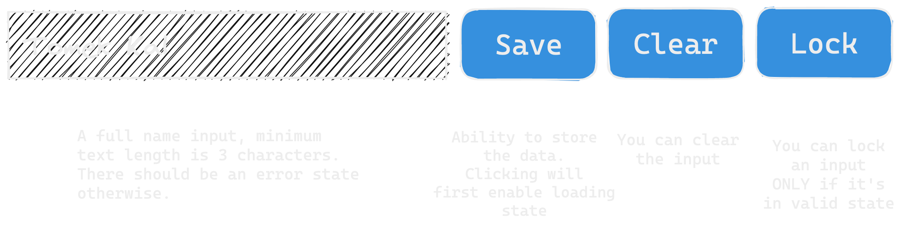

How to handle UI that's not that simple
Talk about fantastic new framework!
Talk about the newest, freshest idea and tooling in the JavaScript land
A seemingly simple UI
Redux promotes single data source
It's easy to understand
It's not ideal, because it becomes hard to maintain
Mental model is too simple for the problem
Disabling "clear" function when input is locked.
How to prevent that?
Putting if conditions for every action
It becomes an issue*
* especially in large projectsWhat's that?
✨ State machines ✨
... and why is it better?
It gives us more tools to define state
Are there any tools?
We can still use Redux.
This is what documentation says:
There's another option
Going to back to our example
Input machine
First, let's introduce some new phrases:
XState is also an ecosystem
It changes how you think about problems
In Redux:
It's simple to start coding right away
You're encouraged to do so
In XState:
More difficult to code right away
Forces you to model the state first
* in my opinion
How to start using it in real applications?
Interactive Maps project
Worked in a small team of full-stack engineers
Pros
Cons
Important thing is
We'll continue exploring this library
How to learn more?
Things to keep in mind
Join Fandom!
We're looking for talented engineers
Visit our virtual booth
Contact Ewa Nowakowska on LinkedIn